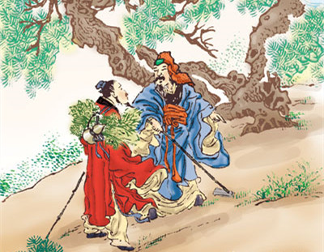

泰伯采药

殷朝末年的时候，有个孝悌兼全的人，姓姬名字叫泰伯，他是周朝太王的长子。他的第三个弟弟，名字叫做季历。后来季历生了一个儿子，名叫姬昌，就是后来的文王了。生下来的时候，先有一只赤色的雀子嘴里衔了丹书停在门户上，表示着圣人出世的祥瑞，所以太王有想把周朝国君的位子传给季历，再由季历传位给昌的意思。泰伯知道父亲的意思，就和第二个弟弟、名字叫仲雍的约下了，假称因为父亲有病，要到山里去采药，借着这个名头，兄弟俩顺便逃到蛮夷的地方，披散了头发，又在身上画了花纹，表示自己的身子是不可以再在世上干事的了。孔夫子表扬泰伯，说他已经到了至德的地步。